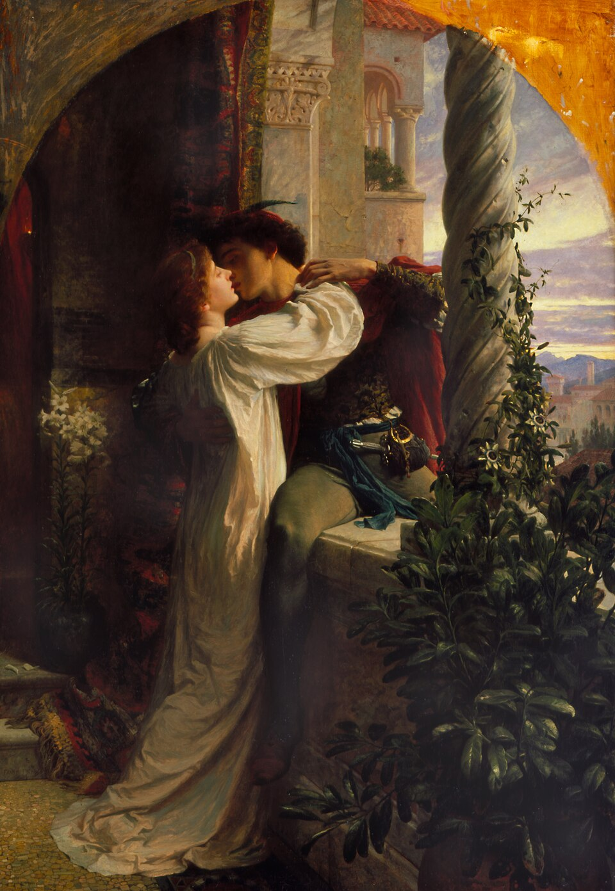
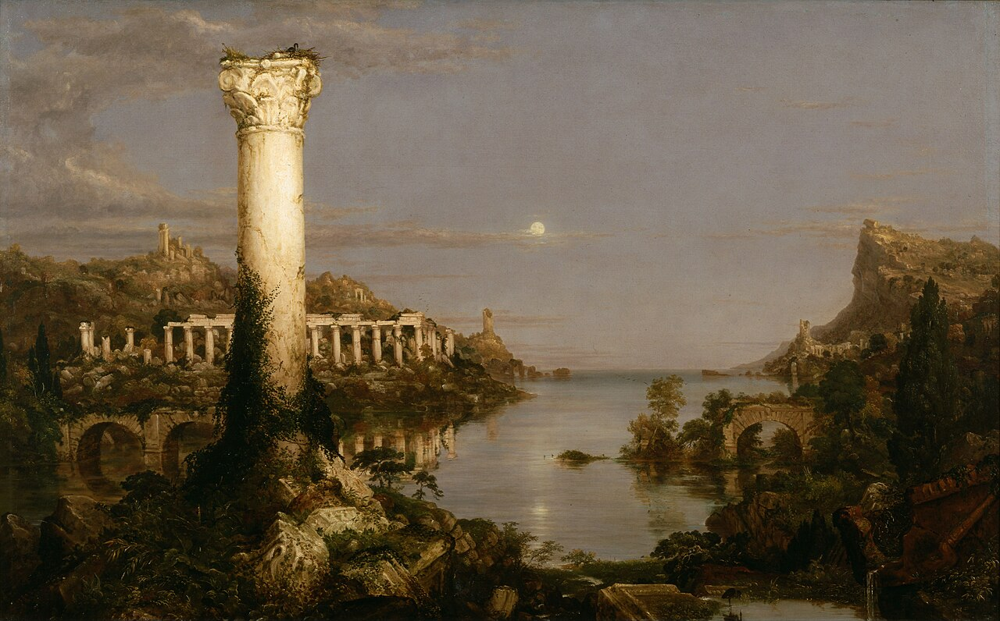
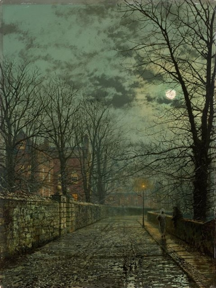
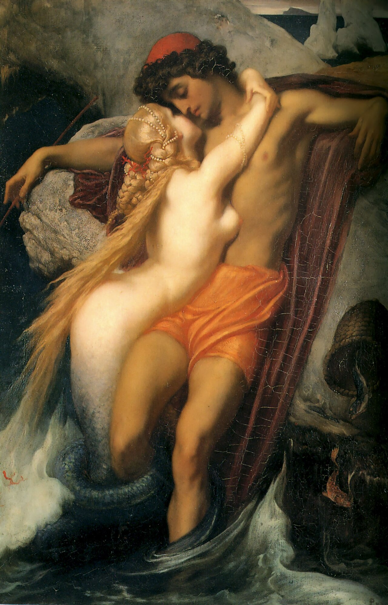
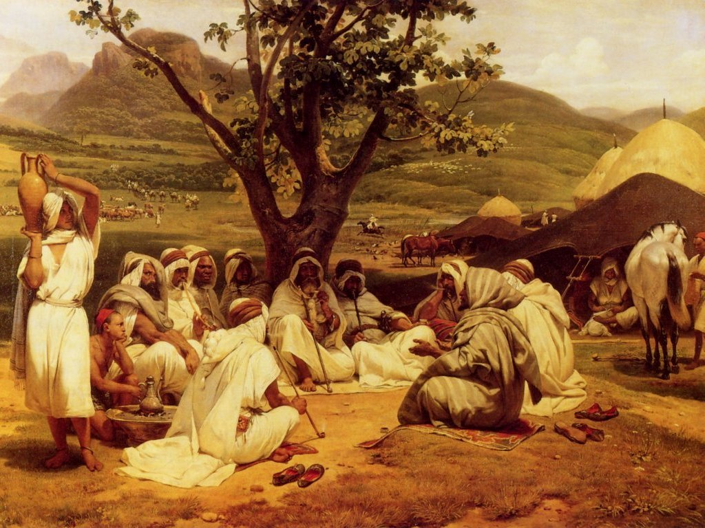
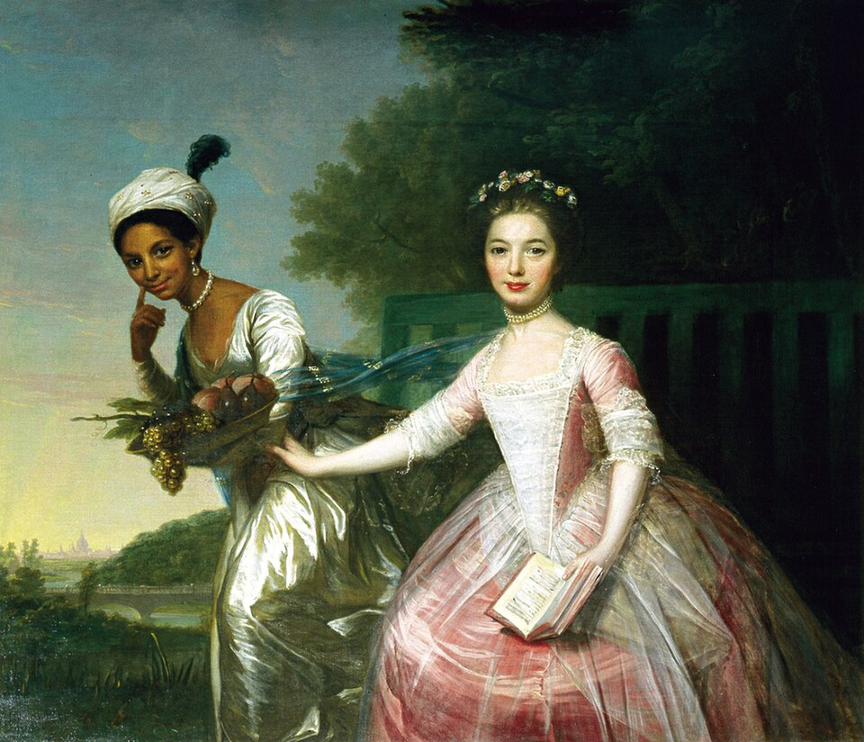
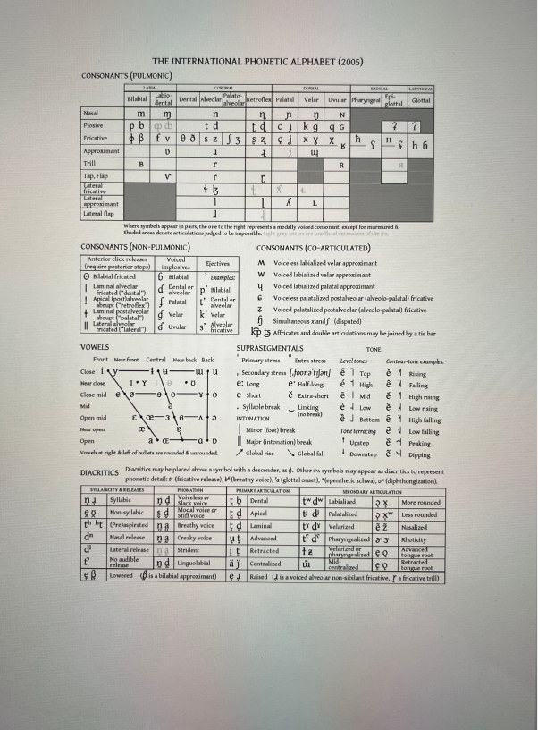
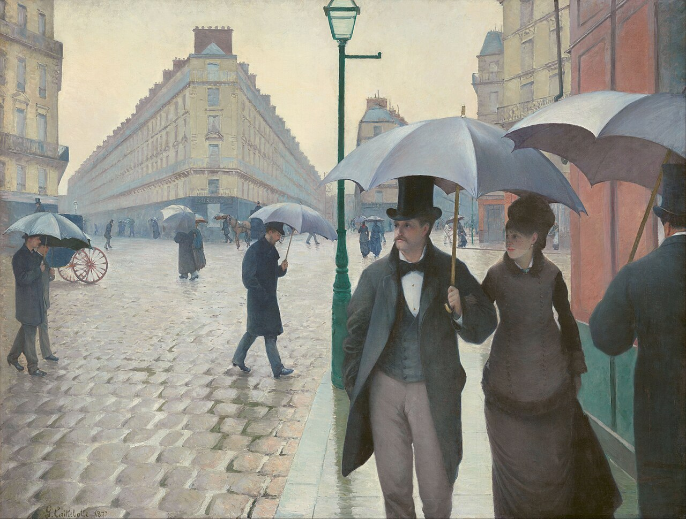
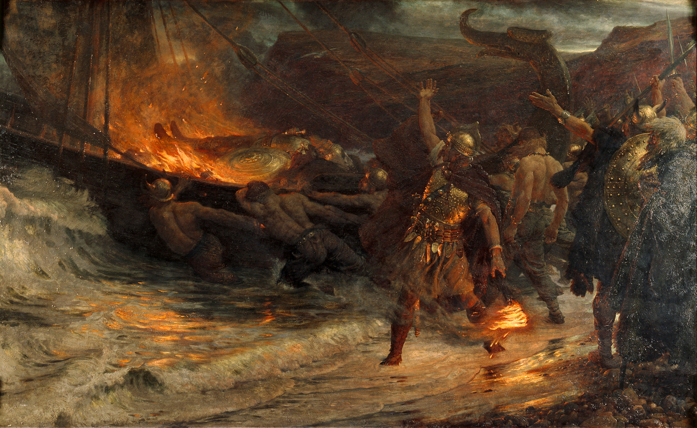

GK2 Study Coach
LitCult II (Poetry — Narrative — Film) + English Linguistics · Explain → Practice → Test
LitCult II
Poetry · Drama · Narrative · Film — close reading, dramatic form, Genette's narratology, film analysis. Five scored tests including the final exam.
Linguistics
Nine units from Saussure to World Englishes — grounded in standard references, with exam-style drills for every unit.
Learn — concepts with examples · Practice — reveals & flashcards · Test — scored quizzes. Progress saves in this browser.
The crack in the marble
McKay's "America" rhymes perfectly — except jeer/there (ll. 10/12), a half-rhyme. One flaw in the polished sonnet, right where the vision darkens. Examiners love it when you spot that.
Genette in one line
Level (extra- / intra- / metadiegetic) and relation (hetero- / homodiegetic) are independent axes. Mixing them up is the single most common narratology mistake.
The classic exam trap
The Great Vowel Shift moved only the LONG vowels of Middle English — raised, or diphthongised if they couldn't rise. Short vowels stayed put.
LitCult II
Introduction to Literary & Cultural Studies II — pick a module. Each one walks you through Learn → Practice → Test.
Poetry
Meter, rhyme, sonnets, tropes — with a full guided analysis of McKay's "America".
Drama
Dramatic speech, five-act structure, tragedy vs. comedy — with the R&J prologue as interactive worked example and Kahn's feminist reading.
Narrative
Genette's narratology: narrators, levels, focalisation, time — applied to Nwapa's Efuru.
Film
Mise-en-scène, cinematography, editing, sound — the toolkit for Belle.
Final Exam
62 questions covering the complete LitCult material — poetry, drama, narrative, film. Exam conditions: no peeking.
Set texts this covers
Claude McKay, "America" · Shakespeare, "Sonnet 116" · Flora Nwapa, Efuru · Belle (dir. Amma Asante) — plus the Nünning & Nünning narratology chapter and Corrigan & White on editing.

Analysing Poetry
Meter, rhyme, form and figures of speech — anchored in close readings of McKay and Shakespeare.
1. Meter — the heartbeat of a line
Meter = the pattern of stressed (/) and unstressed (x) syllables in verse, defined by the kind and number of feet. But note: rhythm ≠ meter. Rhythm = meter + the linguistic and stylistic realisation of the verse (syllable length, repetition, meaning).
| Foot | Pattern | Sounds like |
|---|---|---|
| Iamb | x / | be-LOW |
| Trochee | / x | GAR-den |
| Spondee | / / | HEART-BREAK |
| Dactyl | / x x | MER-ri-ly |
| Anapest | x x / | in-ter-VENE |
The number of feet per line: monometer (1), dimeter (2), trimeter (3), tetrameter (4), pentameter (5), hexameter (6). Two names to know cold: iambic pentameter (unrhymed = blank verse) and the Alexandrine (iambic hexameter). Free verse = poetry liberated from rhyme, meter, and traditional stanza.
2. Line vs. sentence — where syntax meets verse
"The rhythmic dynamics of a poem is determined by the tension between the line of verse and the syntactical order" (Bode 41).
- End-stopped line — syntax pauses where the line ends.
- Enjambment (run-on line) — the sentence spills over the line break.
- Caesura — a metrical break inside a line.
I love this cultured hell that tests my youth. — enjambment across ll. 3–4 (and a caesura after "life")
3. Rhyme — types and schemes
Types of rhyme
- End-rhyme — at line endings (the default case).
- Internal rhyme — inside a line: "And a clatter and a chatter from within" (Eliot).
- Eye-rhyme — looks alike, sounds different: far / war (Coleridge, "Kubla Khan") or love / remove (Sonnet 116, ll. 2/4!).
- Masculine — one syllable, final syllable stressed.
- Feminine — two+ syllables, ending unstressed.
- Identical rhyme — same word twice.
- Half-rhyme — similar sound, no full rhyme (McKay's jeer / there!).
Rhyme schemes
- Couplet — aa bb cc
- Alternate / cross rhyme — abab cdcd
- Enclosing / embracing rhyme — abba cddc
- Chain / interlocking rhyme — aba bcb cdc
- Tail rhyme — aab ccb
Stanzas
Couplet (2) · tercet (3) · quatrain (4) · sestet (6) · octave (8). Heroic couplet = couplet in iambic pentameter.
4. The sonnet — 14 lines, two blueprints
Shakespearean (English)
3 quatrains + closing couplet
abab cdcd efef gg
The couplet often lands the punch — a turn, twist, or verdict.
Petrarchan (Italian)
Octave (abbaabba) + sestet (e.g. cdecde)
The volta — the rhetorical turn — typically falls at line 9.
Other poem types from the handout: ballad (Coleridge, "The Rime of the Ancient Mariner"), ode (Keats, "Ode on a Grecian Urn"), elegy (Gray; Whitman).

5. Tropes & figures of speech — the twelve you must know
| Device | What it does | Quick example |
|---|---|---|
| Simile | Explicit comparison ("like"/"as") | "My love is like a red, red rose" |
| Metaphor | Implicit comparison — one thing described as another | "bread of bitterness" |
| Metonymy | Attribute stands in for the thing | "The Crown" = monarchy |
| Synecdoche | Part stands for the whole (metonymy's cousin) | "all hands on deck" |
| Oxymoron | Contradictory words fused for effect | "cultured hell" |
| Paradox | Self-contradictory statement that contains truth | "We die and rise the same" |
| Hyperbole | Exaggeration for emphasis | "An hundred years should go to praise / Thine eyes" |
| Euphemism | Mild word for a harsh reality (opposite: dysphemism) | troops "retire" (= flee) |
| Anaphora | Repetition at the start of successive clauses | "The yellow fog that… / The yellow smoke that…" |
| Epiphora | Repetition at the end of successive clauses | "…upon the window-panes / …on the window-panes" |
| Ellipsis | Words omitted, meaning survives | "But are not Critics [partial] to their judgment too?" |
| Pun | Play upon words | "I lie with her, and she with me" (Sonnet 138) |
Plus: allegory — a story with a double (surface + hidden) meaning readable on two levels — and personification, giving human traits to non-human things (McKay's America as a fierce woman).
6. Worked example — Claude McKay, "America" (1921)
This is your model analysis. Click any line of the poem to see what an examiner would want you to say about it. Work through all 14 — the notes build a complete close reading.
Click a line to start
Big picture first: a Shakespearean sonnet (abab cdcd efef gg, iambic pentameter). The irony is structural — McKay, a Black Jamaican-American poet, pours anti-racist protest into the most "cultured" European form. Form vs. content is the argument.

A. Scansion trainer — mark the stresses
Sonnet 116, line 12: "But bears it out even to the edge of doom" is a trap — so let's drill the clean one first. Click syllables to mark them stressed, then check.
"Her vigor flows like tides into my blood" (McKay, l. 5)
B. Name that trope — flashcards

Classic short quotations, one device each. Identify it, then click to flip.
C. Form check — quickfire reveals
Q: McKay's "America": rhyme scheme and sonnet type?
Q: Where is the volta in "America", and what changes there?
Q: "Sonnet 116" argues love is constant. Name the two central images of constancy.
Q: What is the logical structure of Sonnet 116's couplet?
Poetry Test — 10 questions
Instant feedback per question. Score appears at the end.
Analysing Drama
Dramatic communication, speech forms, structure and genre — anchored in Romeo and Juliet (Arden 3, ed. Weis) and Meyer's "Drama" chapter.
1. Dramatic text vs. theatrical performance
The dramatic text is only a verbal sign-system; the theatrical performance deploys a far broader set of sign systems — bodies, space, light, sound, costume (Meyer 115–16). Drama therefore has TWO communication levels: internal (character ↔ character) and external (stage → audience).
- Discrepant awareness — audience and characters know different things; congruent awareness — they know the same.
- Dramatic irony — the audience knows MORE than the characters: Romeo believes Juliet dead and kills himself — we know she is about to wake. Intentional irony operates among the characters themselves.
- Exposition: isolated/initial (context given outside the action, e.g. a prologue) vs. integrated (context revealed within the unfolding play). R&J's prologue even tells us the ending — the whole play runs under dramatic irony.
2. Forms of dramatic speech
| Form | Who hears it? | Reliability |
|---|---|---|
| Dialogue | Characters on stage | Strategic — watch reply length, speaker share, interruptions (troubled communication). Dialogue IS verbal action: it initiates and furthers the plot. |
| Monologue | One speaker; others CAN hear | Subjective, unmediated — but not necessarily reliable. |
| Soliloquy | Nobody — the character is alone on stage | High subjectivity AND honesty: reliable access to the character's mind. Plays with discrepant awareness. |
| Aside | Not the other characters, though present | Monological (to self), dialogical (to one character), or directed to the audience. |
3. Character & characterisation
Analyse the dramatis personae along four axes: major/minor · flat/round · static/dynamic · transparent/opaque. Characters appear in a structural constellation and in scene-specific configurations — look for contrasts and correspondences:
- Foil — a contrast figure sharpening a protagonist's profile: Juliet (romantic) vs. the Nurse (pragmatic); Romeo (sentimental) vs. Mercutio (light-hearted); Juliet (passionate, rebellious) vs. Rosaline (chaste, obedient).
- Confidant(e) — the trusted listener who motivates self-revelation: Friar Laurence for both Romeo and Juliet.
- Explicit figural characterisation — what characters say about themselves or others (present or absent!); implicit — entrances/exits, appearance, body language, vocal quality.
4. Structure, time & space
The five-act structure (and R&J's textbook run through it)
| Act | Function | Romeo and Juliet |
|---|---|---|
| 1 | Exposition | Feud established; love at first sight |
| 2 | Complication | Balcony scene; secret marriage; Tybalt's challenge |
| 3 | Climax | Tybalt kills Mercutio; Romeo kills Tybalt → exile |
| 4 | Reversal | Friar's plan; Juliet's potion — found "dead" |
| 5 | Catastrophe | Romeo's poison; Juliet's dagger |
The model is idealtypical — when a play departs from it, ask: for what reason, to what effect?
Three unities & theatrical space
The neoclassical three unities: action (connection and continuity), place (single location), time (represented time = playing time); the open form violates them. Spatial analysis: on-stage vs. off-stage, boundaries and thresholds between locales, word scenery (verbal description instead of set design — Elizabethan standard).
Venues & textual transmission
Shakespeare's Globe (built 1597–99, burnt 1613, closed by the Puritans 1642, reconstructed 1997): an open-air apron stage, audience on three sides — versus the modern picture-frame stage with its fourth wall. Texts survive in quartos (Q1 1597 = "bad quarto" of R&J) and the First Folio (1623). Boy actors played the women's parts; roles were doubled.
5. Genres: tragedy and comedy
Tragedy (via Aristotle)
From prosperity to adversity. Mimesis of a serious, complete action; a noble character transgresses against established order through a tragic flaw (e.g. hubris) or an error of judgment (hamartia) → anagnorisis (tragic recognition) → fall. The audience feels pity and fear, discharged as catharsis. Sub-genre: domestic tragedy (middle-class protagonists).
Comedy
From adversity to prosperity; ordinary people, flat types, mirror held up to society; quarrels settled without serious harm (battle of wits, battle of the sexes). Sub-genres: romantic comedy, satiric comedy, comedy of manners, tragicomedy, epic drama (narrative elements on stage — Wilder's stage manager; Brecht).
6. Worked example — the Prologue as sonnet & exposition
Click any line. The prologue is a Shakespearean sonnet doing dramaturgical work — poetry module and drama module shake hands here.
Click a line to start
Big picture: 14 lines, abab cdcd efef gg — a Shakespearean sonnet as isolated exposition. It spoils the ending on purpose: from line 6 onwards the entire play runs under dramatic irony.
7. Worked example — Kahn's feminist reading
Coppélia Kahn, "Coming of Age in Verona" (1977/78): a feminist rethinking of the play's tragedy — fate vs. feud.
- Not "star-crossed" destiny but a man-made social structure: growing up in Verona means socialisation into patriarchy — sons prove manhood through "phallic violence on behalf of their fathers" (6), not courtship (hence the puns on "stand").
- Romeo and Juliet have no Aristotelian tragic flaw — they build new adult identities apart from the feud, and the feud "blocks their every attempt" (6).
- Structure supports the argument: the feud opens, centres and closes the play (I.1, III.1, V.3). Tybalt is Romeo's foil: two models of becoming a man. Act 3 forces Romeo's choice — sanctioned public manhood (draw the sword) vs. private new identity (Juliet's husband). Mercutio's death shames him back into the feud: "Romeo's hard choice is also ours." (8)
Exam-ready move: pit Kahn against Aristotle. If the tragedy is structural (patriarchy), hamartia becomes systemic, not personal — that contrast is a full essay paragraph.
8. Listen — Oxford lecture on Romeo and Juliet
Emma Smith (University of Oxford, Approaching Shakespeare) on the play — including the question of whether the tragedy is fate, feud or genre. Perfect second opinion next to Kahn.
Source: podcasts.ox.ac.uk (official Oxford embed) · transcript (.srt). Note: the player loads from Oxford's servers.
A. Diagnose the speech situation
Scene: Juliet, alone on the balcony, believes herself unheard: "O Romeo, Romeo, wherefore art thou Romeo?"
Scene: A villain turns from his interlocutor and mutters his true plan so that only the audience hears it.
Scene: The audience watches Romeo poison himself beside a Juliet it knows is alive.
Q: Whose death converts R&J's comedy-like first half into tragedy — and which structural position does that scene occupy?
B. Term ↔ definition flashcards
Drama Test — 12 questions
From soliloquy to catharsis to Kahn.
Analysing Narrative
Genette's toolkit (via Nünning & Nünning), applied to Flora Nwapa's Efuru — exactly as your sessions 8–10 did.
1. Story vs. discourse — the master distinction
Story-oriented narratology
WHAT is told: the content and structure of the narrated story. Focus: action, characters, plot, spatial frame/setting.
Discourse-oriented narratology (Genette)
HOW it is told: the mediation — how transmission, plot structure, and temporal structure are fashioned. Focus: narrator, focalisation, time.
Exam reflex: any narratology question is really asking "story level or discourse level?" first.
2. Who speaks? — Narrator types (Genette)
- Heterodiegetic narrator — absent from the story he tells; no relation to the characters; does not exist within the storyworld.
- Homodiegetic narrator — present as a character in the story; exists within the storyworld (not necessarily the protagonist).
- Autodiegetic narrator — sub-type of homodiegetic: tells their own story, i.e. is the protagonist.
Memorise this line from the slides: "All homodiegetic narrators are first-person narrators, but not all first-person narrators are homodiegetic." (A narrator can say "I" on the extradiegetic level without being a character in the story they tell.)
3. Where does the telling sit? — Narrative levels
- Extradiegetic level — the first/main level of any narrative; there is no narrative without it. The narrating act itself.
- Intradiegetic level — everything that is narrated: all characters, all events.
- Metadiegetic level — a narrative within the narrative, told by a character on the intradiegetic level.
4. Who sees? — Focalisation
Focalisation = a knowledge relation between what a character knows and what the narrator tells us: "a restriction of 'field'… a selection of narrative information" (Genette). Crucial: focalisation is dynamic — you identify it per passage, not for a whole novel.
| Mode | Formula | Meaning |
|---|---|---|
| Zero focalisation | narrator > character | Unrestricted / "omniscient": as many foci as the narrator chooses, outside and inside minds. |
| Internal focalisation | narrator = character | Through the eyes of one character; restricted to what that character knows. Sub-types: fixed (one focaliser), variable (changing focalisers), multiple (same event through different eyes). |
| External focalisation | narrator < character | No insight into anyone's head; only observable surface. (Character sees something shocking — we never learn what.) |
5. When is it told? — Time of narration
- Subsequent — telling what happened in the past (the classic past-tense narrative; Efuru).
- Prior — predictive narrative: telling what will happen (prophecy, usually future tense).
- Simultaneous — telling at the very moment it occurs (present tense, "live commentary").
- Interpolated — telling inserted between moments of the action (diary/letter novels: Wuthering Heights).
6. Where does it happen? — Setting & space
Setting: fictional places that give "topological determination" to the storyworld. Analytical angles: semantics/functions of space, spatial opposites, space ↔ characterisation, space ↔ plot, atmosphere. Concepts: paths (literal & metaphorical), portals (windows, doors, gates — transitions), containers (inside/outside — rooms, compounds, nations).

7. Worked example — the narrator(s) of Efuru
Read each passage, form your own diagnosis, then reveal the model answer.
Full verdict for the exam: Efuru has an extradiegetic, heterodiegetic narrator narrating subsequently, with focalisation shifting per passage (zero ↔ internal ↔ external) — plus the metadiegetic folktale told by Eneke, which mirrors the novel's themes (female disobedience, wit, solidarity) in Igbo oral-storytelling form.

A. Diagnose the passage
Classic exam format: passage → "identify narrator type and focalisation, with evidence." Diagnose first, then reveal.
B. Term ↔ definition flashcards
C. Build the levels diagram
Q: Sort for Efuru: (1) Eneke's folk story about the spirit-husband, (2) the heterodiegetic narrating voice, (3) Efuru, Adizua, Gilbert and all events. Which level is which?
Q: Genette's teacher example: "Today I saw a teacher come up to a group of children… she spoke: 'Listen, children, I'm going to tell you an amazing story… This is the story of Marguerite Bourgeois…'" — map the levels.
Narrative Test — 10 questions
Genette would want you to get these right.
Analysing Film
Film has no narrator — it has an audio-visual narrative instance built from four systems: mise-en-scène, cinematography, editing, sound. (Corrigan & White; your Belle sessions.)
1. Mise-en-scène — everything visible on screen
Elements put in position before filming begins and employed once it does.
- Setting (real or fictional place) vs. set (constructed setting, e.g. soundstage); props — objects that function in the scene.
- Actors' performance: leading actors, character actors (fixed types), supporting actors (secondary characters, foils), stars (aura, recognition).
- Blocking — arrangement and movement of actors relative to each other within the scene's space. (Think of Belle: who stands, who sits, who is placed at the edge of the family portrait's space.)
- Costumes & make-up — highlight or disguise; in a period drama they carry class and race semantics.
- Lighting: natural (source within the mise-en-scène: daylight, room lamps) vs. directional (dramatically shapes an object or person).
2. Cinematography — how the camera sees
- Shot — a continuous point of view; may move but does not cut.
- Point of view: subjective (recreates a character's perspective) vs. objective (impersonal camera — but shaped by cultural conventions, e.g. the male gaze).
- Framing — limits/directs the view (aspect ratios: 16:9, 2.35:1 cinemascope); onscreen vs. offscreen space.
- Camera distance: extreme close-up (eyes, a petal) · close-up (a face) · medium shot (waist up) · (extreme) long shot — often the establishing shot that sets the context.
- Camera movement: pan (frame swivels, camera stays put) · tracking shot (camera itself moves, often on tracks) · zoom (lens adjusts — no camera movement at all).
3. Editing — how shots are linked
A shot gives one perspective; editing builds multiple perspectives by linking shots. Basic device: the cut. Transitions: fade-out/fade-in, dissolve (shots superimposed), wipe (a line pushes one shot off — Star Wars).
Continuity editing ("Hollywood style" / invisible editing)
- Creates spatial & temporal continuity → verisimilitude, minimal effort for the viewer. Opposite: disjunctive editing (deliberate breaks for aesthetic/conceptual/psychological effect).
- (Re-)establishing shots for context + inserts for details.
- 180-degree rule — all shots from one side of the axis of action, keeping relative positions consistent; breaking it disorients (sometimes intentionally).
- Shot-reverse-shot — conversation standard: angle from one end of the axis, then the reverse angle.
- Eyeline match — character looks offscreen → cut → what they see (The Birds).
- Flashback / flashforward — nonlinear temporality; pace — length of takes before each cut; crosscutting — cutting between actions to suggest simultaneity.
4. Sound — the diegesis question
Intradiegetic sound
Originates within the storyworld: dialogue, background noise, music the characters can hear.
Extradiegetic sound
Originates outside the storyworld: score, musical character themes, voice-over.
Notice the vocabulary transfer: "diegesis" does the same conceptual work as in narratology — inside vs. outside the storyworld. Same system, different medium.
5. Context for Belle
Amma Asante's Belle (2013) reimagines Dido Elizabeth Belle, starting from David Martin's c. 1778 double portrait with Lady Elizabeth Murray. Two critical anchors from the course: Kehinde Andrews reads the film (with Amazing Grace) as symptomatic of a "psychosis of whiteness" — celluloid hallucinations that centre white saviours in abolition narratives; and Lawrence Scott's novel Dangerous Freedom imagines Dido appalled by the portrait's exoticising "artifice" (the turban, the feather). Exam-ready move: connect a formal observation (framing, blocking, costume in a scene) to these debates about representation.

A. You're the editor — name the technique
Each scenario describes something you'd see on screen. Diagnose the term, then reveal.
Scene: The heroine glances up at something beyond the frame; cut: a portrait hanging on the wall.
Scene: A wedding ceremony intercut with a carriage racing toward the church.
Scene: Two characters argue at dinner; we see her over his shoulder, then him over hers, back and forth.
Scene: Mid-conversation, the camera suddenly jumps to the other side of the two speakers — left and right flip, and you feel briefly lost.
Scene: A sweeping view of a Georgian estate opens the sequence before we cut inside to the drawing room.
Scene: Melancholy strings swell as Dido reads the letter. Nobody in the room can hear the music.
Scene: Without the camera moving from its spot, the frame slowly swivels from the door across the ballroom to the staircase.
B. Term ↔ definition flashcards
Film Test — 10 questions
Lights, camera, terminology.
English Linguistics
Nine units covering the full introductory canon — key reference: Mair, English Linguistics (4th ed., Narr). Pick a unit:
Language, linguistics & the sign
Linguistics = the scientific study of human language structure and language use. Language links sounds with meanings through convention — it doesn't mirror an extralinguistic reality, it constructs one.
Saussure's linguistic sign (the exam classic)
- Signifier (signifiant) — the sound image, the form a sign takes.
- Signified (signifié) — the concept the signifier represents.
- Inseparable, interdependent, neither pre-exists the other — and the link is arbitrary: no natural connection, purely social convention. (Motivated exceptions: onomatopoeia — cuckoo, hiss.)
Alternative model: the semiotic triangle (Ogden/Richards 1923): thought — symbol — referent.
Four oppositions you must keep apart
| Pair | Distinction |
|---|---|
| langue vs. parole | The sign system in the mind (abstract knowledge) vs. language in actual use (individual speech events). Chomsky's echo: competence vs. performance. |
| synchronic vs. diachronic | Language at one point in time vs. its development over time. |
| descriptive vs. prescriptive | Objective description of what speakers do vs. judging what they should do. |
| langage | The inborn human capacity for language (third Saussurean term — don't confuse with langue!). |
The bracket code (learn it cold)
{ } morphemes · [ ] phones (phonetic) · / / phonemes (phonemic) · < > graphemes
The levels of linguistics = the course plan: phonetics/phonology → morphology → syntax → semantics → pragmatics (+ socio, historical, variation).
Q: Which brackets enclose walked analysed as {walk} + {-ed}, and which enclose its pronunciation [wɔːkt]?
Q: German Gift (poison) and English gift (present) sound identical. What does this prove about the linguistic sign?
Q: A student says "I know English grammar but I made a slip of the tongue." Translate into Saussure AND Chomsky.
Posthumous founder
Saussure (†1913) never wrote his famous book: the Cours de linguistique générale (1916) was reconstructed from his students' lecture notes. Modern linguistics rests on borrowed notes — fitting.
Gift vs. gift
Same signifier /gɪft/, two signifieds: "present" (English) vs. "poison" (German). Arbitrariness in one word pair — and a warning for birthday cards to German friends.
Why brackets matter
Writing [haʊs] claims phonetic precision; /haʊs/ claims systemic status; <house> is just spelling; {house} is a morpheme. Four brackets, four different scientific claims.
Phonetics vs. phonology
| Phonetics | Phonology |
|---|---|
| Production & perception of speech sounds → phones. Physical. Branches: articulatory, acoustic, auditory. | Categorical organisation of sounds to signal meaning → phonemes. Language-specific system. Segmental + suprasegmental (stress, intonation). |
- Phone — any speech sound. Phoneme — smallest unit that can change meaning, established via the minimal pair test (pin/bin).
- Allophones — realisational variants of one phoneme: free variation (interchangeable, speaker-dependent) vs. complementary distribution (each variant bound to its context, systematic: [pʰ] vs. [p]).
- Transcription: / / phonemic (only phonemes) vs. [ ] phonetic (every detail).
Describing sounds
Consonants — three parameters: manner (obstruents: plosives, fricatives, affricates · sonorants: nasals, laterals, rolls, semivowels), place (bilabial, labiodental, dental, alveolar, post-alveolar, palato-alveolar, palatal, velar, glottal), voicing. Vowels — openness, place of tongue, roundness, length.

The syllable & suprasegmentals
- Structure: onset + rhyme (= nucleus + coda). Nucleus obligatory; onset max. 3 C; coda max. 4 C. Open syllable = no coda; closed = has one. Maximum onset principle: push consonants into the next onset where phonotactics allow.
- Stress distinguishes word class (OBject/obJECT) and compounds from phrases (GREENhouse / green HOUSE). Unstressed vowels reduce to /ə/ or /ɪ/.
- Intonation: falling (statements, wh-questions), rising (yes/no questions), rise-fall (certainty), fall-rise (hesitation). Tonic syllable = where the tone falls.
| Minimal pair | Contrast proven |
|---|---|
| pin – bin | /p/ – /b/ (voicing) |
| coat – goat | /k/ – /g/ (voicing) |
| sum – sun | /m/ – /n/ (place of articulation) |
| ship – sheep | /ɪ/ – /iː/ (vowel quality & length) |
| bat – bad | /t/ – /d/ — contrasts hold in final position too |
Swap exactly one segment and the meaning changes — the minimal pair test, phonology's basic proof of phonemic status (method: cf. Mair 2022: 28).
Drill — exam-style, check yourself:
Q: Allophones… (a) change meaning (b) are realisational variants of one phoneme (c) show up in minimal pairs (d) can stand in complementary distribution. Which statements hold?
Q: Odd one out: /p, t, k, m/ — and /uː, ɔː, e, w/?
Q: From yes, chin, boil, mouse, little: find a semi-vowel, an affricate, all diphthongs, a lateral.
Q: Openness, voicing, roundness, stress — which of these describe English VOWELS?
Morphemes
- Morpheme — smallest meaningful unit. (Phonemes distinguish meaning, morphemes carry it.)
- Free (stand alone): lexical (content words) vs. grammatical (function words). Bound (always attached): derivational (word formation, lexical meaning, before inflection, can change word class — attaches to the base) vs. inflectional (grammatical meaning, changes form not class, after derivation — attaches to the stem).
- Allomorphs — phonetic variants of one morpheme: plural {-s} = [s] after voiceless non-sibilants (cats), [z] after voiced non-sibilants (dogs), [ɪz] after sibilants (bushes).
- Productivity — how freely a morpheme extends to new cases: {-ness} high, {-en} low.
Word formation
| Process | Definition · example |
|---|---|
| Compounding | 2+ free morphemes; head on the right determines class. Endocentric (steamboat = kind of boat), exocentric (redbreast — head unexpressed), appositional/oppositional (singer-songwriter — two descriptions, same referent), copulative (sleepwalk = A+B). |
| Derivation | Free + bound derivational morpheme. Prefixation (no stress change: befriend) vs. suffixation (often shifts class & stress: 'angel → an'gelic). |
| Conversion / zero-derivation | New word class, no formal change (ship, bottle, smile). |
| Clipping | Delete parts: flu < influenza, vet < veterinarian. |
| Blending | Start of one + end of another: motel, Spanglish. |
| Acronym vs. alphabetism | Initials pronounced as a word (NATO) vs. letter by letter (UK, TV, NGO). |
| Back-formation | Remove a (supposed) affix: editor → edit. |
Compound or phrase? Four tests
(1) Word stress on first element · (2) not separable · (3) first element cannot vary (*greener house for greenhouse) · (4) meaning not fully compositional.
Drill — classify, then check:
Q: Classify: brunch · paleface (the person) · FBI · gym < gymnasium · apple pie.
Q: From butter, hammer, played, darken, smaller, undo, the, walks, kindness: find an inflectional suffix, a derivational suffix, a derivational prefix, and a word with NO bound morpheme despite appearances.
Q: Why is blackboard a compound but black board a phrase? Give two tests.
The syntactic hierarchy
Word → phrase (words united around a head: NP, VP, PP, AdjP, AdvP) → clause (usually contains a verb) → sentence (largest unit, contained in nothing larger).
Four tests to identify a phrase
(1) Substitution — replace with a pro-form · (2) movement — can it move as a block? · (3) coordination — with a similar phrase · (4) stand-alone — can it answer a question?
Form vs. function — the crucial double bookkeeping
Every constituent has a form (NP, PP…) and a function: S (subject), P/V (predicator), Od (direct object), Oi (indirect object), CS (subject complement), CO (object complement), A (adverbial).
The seven basic clause patterns (Mair, Unit 5)
| Pattern | Example |
|---|---|
| SP | The baby cried. |
| SPCS | Sally is a student / intelligent. |
| SPO | My sister is reading the paper. |
| SPA | My friend lives in Manchester. (A obligatory!) |
| SPOO | She sent us (Oi) some photographs (Od). |
| SPOCO | Some consider him (O) a traitor (CO). |
| SPOA | She put the keys on the table. |
Object or adverbial? Two tests: objects answer who/what-questions and can become passive subjects; adverbials answer where/when/how/why and cannot be passivised.
Clause & sentence types
Subordinate clauses: relative (defining/non-defining), adverbial (time, place, condition, concession…), nominal (as S, O or C). Sentences: simple (one main clause), compound (2+ main clauses coordinated), complex (main + subordinate).
How languages code grammar (typology)
Strategies: word order, inflection, function words, intonation. Synthetic languages pack grammar into bound morphemes — inflectional (Latin) or agglutinating (Turkish); analytic/isolating languages use word order + function words (English on its way there; extreme case: Chinese). Autosemantic (content) vs. synsemantic (function) words.
Drill — parse, then check:
Q: Everyone hopes that the exam will be easy — comparative, compound, imperative or complex?
Q: The jury considers him a genius. In the morning, several students in the library sent their tutor a long email. — give phrase type + function of a genius, In the morning, several students in the library.
Q: Label: [They] [gladly] [told] [us] [the results].
Q: We finally arrived at the railway station — is at the railway station an object or adverbial? Prove it.
Semantics — de-contextualised meaning
Semantics studies potential, conventional meaning ("what is said"); pragmatics studies utterance meaning in context ("what is meant"). Levels: lexical — sentence/propositional — text semantics.
- Lexeme — abstract dictionary unit (includes all inflected forms); lemma — the headword of the entry. Lexicology studies vocabulary structure; lexicography writes dictionaries.
- Frege's principle of compositionality: complex meaning = sum of the parts. Exception: idioms (pull someone's leg).
- Componential analysis: meaning as feature bundles — boy = [+human] [−female] [−adult]. Alternative: prototype semantics (the ideal representative).
- Meaning relations of the sign: reference (word ↔ entity in the world) vs. sense (context-independent defining features). Extension = class of all referents (cat = all cats); intension = set of defining properties. Denotation (objective core) vs. connotation (subjective, emotional: night = romantic/scary).
Sense relations — the exam's favourite zoo
| Relation | Definition · example |
|---|---|
| Polysemy | 1 word, 2+ related meanings (beam of light/of wood) |
| Homonymy | 1 form, 2+ unrelated meanings (mole) |
| Synonymy | Roughly same sense; total synonymy is virtually nonexistent (differs in connotation, register, region, collocation) |
| Antonymy | Complementary (alive/dead — no middle), gradable (small/big), relational/converse (buy/sell, follow/precede) |
| Hyperonymy/hyponymy | Superordinate dog → hyponyms Terrier, Boxer |
| Holonymy/meronymy | Whole car → parts windscreen, wheel (co-meronyms) |
| Lexical field | Related lexemes covering one domain |
| Phraseology | Proverbs, stereotyped similes (clear as crystal), collocations (do homework, not *make) |
Drill — name it, then check:
Q: Name the term: (a) the headword that opens a dictionary entry (b) an expression whose meaning isn't the sum of its parts (c) the discipline that studies vocabulary structure (d) the method that splits meaning into feature bundles like [+human] (e) the class of everything a word can refer to.
Q: Sense relations: to walk / to stroll · to lend / to borrow · wide / narrow · tree / branch.
Q: night means "time between sunset and sunrise" but also feels romantic or scary. Which term covers which part?
Pragmatics — meaning in context
Studies utterances in real communication. Three theory blocks: communication models, speech act theory, Grice's maxims.
Communication models
Bühler's Organon model (expression – representation – appeal) extended by Jakobson with three constituents: message, channel/contact, code.
Speech act theory (Austin 1962 → Searle 1969)
- Austin's parts of the locution: phonetic act (producing sounds), phatic act (words in grammatical order), rhetic act (using them with specific meaning). Beware the classic typo trap: it's rhetic, not "rhotic" — that one is an /r/-term from phonology.
- Searle's utterance levels: proposition (literal content), illocution (speaker's intention — determines the speech act), perlocution (effect on the listener). Performative verbs: promise, baptise, declare.
- Classification: representatives/assertives (claim truth), directives (get hearer to act — can be indirect: "Can you pass the salt?"), commissives (speaker commits: promise, swear), expressives (attitude: apologise), declarations (change the world: "I hereby declare you husband and wife").
Deixis
Expressions anchoring utterances in context: time (today, tomorrow), space (here, over there), person (he, my). Plus discourse markers (boundary signals) and theme/rheme (given vs. new information).
Grice: cooperative principle & the four maxims
| Maxim | Rule |
|---|---|
| Quantity | Be as informative as required — not more, not less. |
| Quality | Don't say what you believe false or lack evidence for. |
| Relevance | Be relevant. |
| Manner | Avoid obscurity/ambiguity; be brief and orderly. |
Classic mix-up: Quality and Quantity get swapped constantly — "as informative as required" is QUANTITY, "don't say what you believe false" is QUALITY. Flouting a maxim generates a conversational implicature.
Drill — term check, then Searle, then Grice:
Q: Term check: (a) the effect an utterance has on the listener (b) the unstated meaning a hearer must infer (c) the act of producing words in grammatical order (d) the new information that follows the theme (e) expressions that anchor an utterance in its context.
Q: Searle-classify: "I promise to call you tonight." · "I hereby open the conference." · "The forecast promised sunshine for the weekend."
Q: A: "How did your exam go?" — B: "Lovely weather today." Which maxim is flouted, and what is implicated?
Sociolinguistics — language as a social phenomenon
Core assumption (Kortmann): variation is not random — it correlates with the speaker's (would-be) group membership. Speakers have co-existing group identities; communities are heterogeneous.
The variety grid
| Type | Determined by | Variety |
|---|---|---|
| diatopic | region (user) | dialects |
| diastratic | social group (user) | sociolects (genderlect, jargon…) |
| diaphasic | situation (use) | registers/styles (subject, interlocutors, mode, formality) |
Dialect ≠ accent: dialects differ in pronunciation AND vocabulary AND grammar; accents only in pronunciation.
Standard, prestige & accommodation
- The standard is itself just a dialect that won — used in writing, media, education; carries overt prestige. Non-standard varieties are linguistically equal, often stigmatised, may carry covert prestige. The vernacular = variety furthest from the educated standard.
- Accommodation theory (Giles): convergence — adapting towards a group (up or down); divergence — emphasising difference to dissociate.
- Labov's NYC /r/ study: the higher the class index AND the more formal the situation, the closer to the (rhotic) standard; hypercorrection is typical of the lower middle class — anxious overshooting in formal styles.
- AAVE features: copula deletion (He crazy), multiple negation (We never had no trouble).

Drill — sociolinguistic toolkit:
Q: Fill in: (a) diatopic, diastratic and ___ varieties (b) prestige attaching to stigmatised forms = ___ (c) shifting your speech away from an interlocutor = ___ (d) an accent differs from a dialect at which level(s)? (e) the variety furthest from the educated standard = ___.
Q: Labov's NYC department-store logic: what did closeness to the rhotic prestige norm correlate with — and which group overshoots it?
Q: Name the AAVE features: "He tired." / "Ain't nobody seen nothing."
Language change & the history of English
Why languages change
Internal: ease of articulation (assimilation: OE wifman → wimman), perceptual clarity (clipping stops at ad), phonological symmetry (voiced/voiceless pairs), analogy (strong verbs → -ed: OE halp → helped; eagan → eyes), spelling pronunciation (often with /t/), reanalysis (ME a naddre → an adder). External: language contact, separation of speakers, cultural/social change.
The family tree
English = (Proto-)Indo-European → Germanic → West Germanic (with Frisian, German, Dutch, Yiddish, Afrikaans — NOT Danish/Swedish = North Germanic). Other IE branches: Celtic (Scots Gaelic, Welsh), Italic (Portuguese), Slavic (Polish). Finnish/Hungarian: non-Indo-European (Finno-Ugric).
Periodisation — the four stages
| Period | Key facts |
|---|---|
| Old English c. 500–1100 | 449 Germanic invasion (Angles, Saxons, Jutes); Christianisation 597; Viking invasions → Danelaw; ends with Norman Conquest 1066. Synthetic: 3 genders, 4–5 cases, strong verbs with ablaut vs. weak with dental suffix; free-ish word order. 4 dialects: Northumbrian, Mercian, West Saxon, Kentish. ~400 Latin loans; ~85 % of OE vocabulary now obsolete. |
| Middle English c. 1100–1500 | French rules after 1066: massive loss of inflections → transition synthetic → analytic, rigid word order, function words. ~11,000 French loans (crown, justice, religion, beef/pork/veal vs. ox/swine/calf — French at table, English in the barn). Chaucer! |
| Early Modern English c. 1500–1750 | Great Vowel Shift: all ME LONG vowels raised or diphthongised (not the short ones — classic trap). Printing, spelling standardised by ~1650, codification after; you ousts thou/ye; do-periphrasis first optional, then obligatory; kn-/gn-/wr- clusters reduced; multiple negation banned in the 18th c. Shakespeare (1564–1616), King James Bible 1611. |
| Modern English since c. 1750 | Industrial revolution, urbanisation → convergence AND new urban varieties; empire spreads English; media (audio recordings 1899, BBC TV 1936, internet 1990s). |
| Case | masc. | fem. | neut. | plural |
|---|---|---|---|---|
| nominative | se | sēo | þæt | þā |
| genitive | þæs | þǣre | þæs | þāra |
| dative | þǣm | þǣre | þǣm | þǣm |
| accusative | þone | þā | þæt | þā |
The Old English definite article: three genders × four cases (plus an instrumental þȳ) — a dozen forms where Modern English has one. THIS is what "synthetic" means; by c. 1100 the whole paradigm collapses into þe → the. (Standard paradigm; cf. Mair 2022: 206.)

Drill — historical toolkit:
Q: Branch of Indo-European (or not IE at all): Welsh · Swedish · Hungarian · Spanish · Czech.
Q: True or false: (a) Shakespeare could use "Came he home?" and "Did he come home?" side by side (b) The GVS turned ME long /iː/ into a diphthong (c) Multiple negation was already banned in Old English (d) Rhymes like prove/love are evidence for EModE pronunciation.
Q: The old past tense holp (of help) became helped. Which mechanism of change?
Q: Why does English eat French at dinner (beef, pork, veal, mutton) but farm in Anglo-Saxon (ox, swine, calf, sheep)?
Variation linguistics — World Englishes
English today is a pluricentric language — hence the plural "Englishes": several co-existing standards.
ENL — ESL — EFL
| Type | Profile | Kachru circle |
|---|---|---|
| ENL | Native majority; societal monolingualism; first diaspora (17th–19th c. settlement: GB, USA, Australia). Norm-providing. | Inner Circle |
| ESL | Learnt as additional language for internal use (education, administration); societal multilingualism; second diaspora (colonisation: India, Nigeria). Norm-developing = the New Englishes / Postcolonial Englishes. | Outer Circle |
| EFL | Foreign language for international communication (Germany, Japan, China). Norm-dependent — on Inner Circle norms, not Outer! | Expanding Circle |
BrE vs. AmE — the two undisputed global standards (Mair)
Spelling: centre/center, favour/favor · vocabulary: boot/trunk, state school/public school (a British "public school" is private — enjoy) · phonology: rhoticity (post-vocalic /r/ silent in BrE, sounded in AmE), /t/-flapping in AmE.
Dialectology terms
Isogloss — boundary line of one linguistic feature; many overlapping isoglosses = dialect boundary. Southern US y'all = 2nd person plural. Northern Cities Shift — ongoing vowel change in the US Great Lakes cities (Chicago, Detroit — NOT northern England, classic trap).
Drill — World Englishes:
Q: Kachru: why does Nigerian English sit in the Outer Circle? (a) it is norm-dependent (b) it belongs to the New Englishes (c) Nigeria was settled in the first diaspora (d) most speakers learn it as an additional language.
Q: True/false: EFL speakers orient towards Inner Circle norms · ESL contexts are typically societally multilingual · isoglosses separate formal from informal registers · the Northern Cities Shift is happening in northern England.
Q: Fill in: several co-existing standards make English a ___ language; postcolonial second-language varieties are collectively the ___ Englishes; a bundle of overlapping isoglosses forms a ___.
Linguistics Test — 40 questions
Every unit's key concepts, all the classic traps included — from Saussure's triangle to rhoticity.
Final Exam
62 questions — every concept from the poetry, drama, narrative and film material is tested at least once: all feet and rhyme types, every trope, dramatic form from soliloquy to catharsis, Genette's full toolkit, the complete film vocabulary, and the Belle debate. Treat it like the real thing.
Pacing
62 questions ≈ 30–35 minutes at exam speed. If a question takes you more than a minute, flag the concept and revisit its Learn phase afterwards.
Read the why — always
Every answer comes with an explanation. Read it even when you were right: half the explanations contain the trap you'll meet in the real exam's rephrased version.